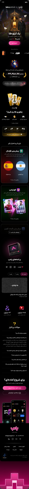

Jimi Jam: making a share of gold worth coming back for
Leading design and co-owning the product behind Pump’s World Cup campaign, from the reward model to three home-screen releases.
Design leadership → Product ownership → Live iterationA Pump case study · 7 min read
My role Head of Design · Product co-ownerCampaign 21 Khordad–1 Mordad 1405 · World Cup 2026
85%Signup-to-first-game conversion
+40%Relative conversion improvement
700k+People engaged across the campaign
Signup-to-first-game conversion reached 85%, a reported 40% relative increase. Campaign participation is a separate measure.
Jimi Jam was Pump’s campaign for the 2026 World Cup. A sponsor would provide one kilogram of gold, and the campaign would run from 21 Khordad to 1 Mordad 1405. Planning began in Farvardin, shortly after the ceasefire.
The initial proposal was to award the gold through a draw, with one or several winners. My concern was what would happen between someone hearing about the prize and returning to the product. A large reward could attract attention, but a result that felt entirely random gave users little sense that continued participation would change their outcome.
We also had a delivery constraint. Footpump, a new football game, needed to launch before the campaign began. With limited design time and a campaign lasting several weeks, we had to decide what the first release needed—and what we could improve while people were already playing.
My role
I was Pump’s Head of Design and a product co-owner. I proposed and designed the reward model, helped shape the campaign’s participation mechanics, and led the design work across the landing page, home screen, leaderboard, and programme entry point.
My contribution started with how the gold would be distributed. It continued through prioritising the phased releases and making the rules, value, and next action clearer in the product. The campaign’s overall reach was a shared result of product, the programme, marketing, and distribution.
Introduce the campaign
Landing page
01
The campaign landing page

12
Scroll to explore the full landing page ↓
1
One prize pool
The hero establishes the one-kilogram gold prize.
2
A route into play
The primary action turns the campaign promise into a next step.
Explore the complete campaign landing page by scrolling inside the frame. Product images contain design examples, not measured payouts.01 · Design the participation model
Connect the reward to participation
I proposed distributing the gold according to participants’ accumulated points, with streaks supporting continued participation. More points would mean a larger share of the one-kilogram prize pool.
The intention was to give users a connection between their actions and their reward. Instead of asking them only to enter a draw and wait, the campaign gave them something they could keep building through participation.
That changed the design problem. We now needed to explain how to earn points, what those points meant, and why it was worth returning. The landing page introduced that relationship as three steps: play every day, earn points, and turn those points into gold.
Make the rules understandable
Reward model
01
Explain the participation model
1
A simple sequence
Read right to left: play every day, earn points, turn points into gold.
2
A time-bound campaign
The countdown establishes when the competition starts.
The landing page translates the mechanism into a three-step sequence.02 · Keep participation meaningful
Give late arrivals a reason to begin
A cumulative competition creates a second problem. Someone who joins later sees participants who have already had time to build their scores. The same progress that motivates an existing player can make a newcomer feel that they have missed their chance.
We introduced a welcome spinner to give new arrivals an initial boost and encourage them to enter the competition. Its role was to make starting feel worthwhile, even after the campaign was underway.
This added a distinct purpose to the onboarding experience. The core model rewarded continued participation; the welcome spinner addressed the hesitation of people arriving behind the leaders. We did not assume that the same incentive would work equally well at both moments.
03 · Bring it to launch
Launch the core and improve it in phases
The first release brought the campaign and the new Footpump game into the product. We launched the landing page and an initial version of the home screen, establishing the participation experience before expanding how we communicated its value.
We chose a phased approach because the campaign deadline and the game launch were competing for the same design capacity. The home screen then became a central part of the work: it was where returning participants checked their progress and where new arrivals needed to understand what to do first.
Three releases structured the rollout. The opening version established the campaign. On 30 Khordad, we made the gold value more explicit. On 10 Tir, we revised the messaging and expanded what users could see in the leaderboard.
Three releases across one campaign
Delivery sequence
01 · OPENING RELEASE21 Khordad 1405
Launch the core campaign, landing page and first home-screen experience around Footpump.
02 · MAKE VALUE VISIBLE30 Khordad 1405
Show the current gold amount in soot and describe progress as a share of gold.
03 · CLARIFY THE NEXT STEP10 Tir 1405
Show value in tomans, clarify the game actions and add value to the leaderboard.
Campaign closes · 1 Mordad 1405 / Planning began in Farvardin.
Release sequence from the project account. Footpump was prepared before the campaign opening.04 · Design the experience
Show what the points are worth
In the 30 Khordad release, we added the gold amount in soot, a local unit for small quantities of gold. A banner that had said “Play and win one kilo of gold” became a display of the user’s current share of the prize pool. We also changed the score label from “points” to “share of gold.”
The distinction mattered because points describe progress inside a system. Gold describes the reason someone might want to participate in that system. Showing the amount connected those two meanings more directly.
The game dashboards show a change in activity around this release, including an increase in Footpump play volume. This was an encouraging signal for making the reward more tangible. The charts record daily activity, however, so they cannot separate the effect of this change from other campaign activity happening at the same time.
From a prize banner to a personal share
Releases 1 and 2
01
Version 1 · Campaign launch
1
Lead with the big prize
The banner says “Play and win one kilo of gold.”
2
Progress in points
Points, rank and a daily multiplier explain progress inside the system.
The second home screen makes the user’s current gold share visible and changes how progress is described. Displayed amounts are design examples.05 · Design the experience
Make the first action easier to understand
The 10 Tir release brought the current share into focus as a value in tomans. Below it, the message became “Play and get a share of gold,” the next game’s reward was visible, and the game cards carried explicit “Start game” actions.
For a new user, the page needed to make several ideas connect: there was a shared gold prize, participation built points, and those points affected their share. The first game needed to feel like a clear next step within that explanation. The page now put the value, the reward for continuing, and the action closer together.
Following this release, the reported signup-to-first-game conversion rate reached 85%, a 40% relative increase over the earlier rate.
This was the most direct activation signal in the project. The activity dashboards also show higher participation across several behaviours around the release period, giving us a broader view of the change in engagement.
Connect value, reward and action
Release 3
01
Version 3 · 10 Tir
1
Value in familiar terms
The current share is shown as a value in tomans.
2
Explain the next reward
“Play and get a share of gold” sits above the next game’s reward.
3
Make the action explicit
The game cards now carry visible “Start game” labels.
The 10 Tir design expresses the share in tomans, brings the next-game reward into the message, and labels the game actions explicitly.
A stronger start to participation
Reported activation result
85%
Signup-to-first-game conversion after the 10 Tir release
Before
100
After
140
Conversion index · earlier rate = 100 The after index represents 40% relative growth.
A clearer route into the first game accompanied the third release.
Reported before-and-after signup-to-first-game conversion. The index represents relative change, not a conversion rate above 100%. No separate effect is assigned to the simultaneous home-screen and leaderboard changes.06 · Design the experience
Put value beside rank
The 10 Tir release also changed the leaderboard. Previously, it showed participants’ points. We added the monetary value of their current campaign share, making the stakes visible alongside the ranking.
A score could tell a user who was ahead. A value in tomans helped explain why that position mattered. The leaderboard became another place where the campaign’s reward model could be understood through a concrete example.
This change and the home-screen update were released together. Their combined timing is relevant when reading the results: we could observe what changed after the release, but could not assign a separate conversion effect to each component.
Give the ranking a concrete meaning
Leaderboard
01
Put value beside rank
1
Personal context first
The participant sees their current share and rank before comparing with others.
2
Value alongside the score
Monetary equivalents make the reward behind the ranking more tangible.
3
Find my position
A separate personal row makes the participant’s own position easy to find.
The design shows the value of campaign shares. It does not represent participants’ total financial assets or verified prize payments.07 · Design the experience
Connect the programme to the competition
We also gave the campaign a place inside the programme, using the leaderboard to show the competition and a QR code to give viewers a route into it. The broadcast entry design repeated the one-kilogram prize and the message that playing could earn a share.
This carried the campaign beyond the app’s own entry points. The programme gave the competition visibility; the QR code provided a route to participate. The design connected audience attention with a concrete next action.
A route from the programme into the product
Broadcast entry
01
Turn viewing into an entry point
1
Repeat the shared-prize promise
The programme entry panel connects playing with earning a share.
2
Make joining immediate
A large QR code gives viewers a direct route into participation.
The supplied programme frame shows the prize message and QR entry panel.08 · The outcome
What changed during the campaign
More than 700,000 people engaged with Jimi Jam across the campaign, according to the campaign account. That is an overall participation result, separate from the conversion improvement measured for new arrivals.
Decision or scope
Observed result
Home-screen messaging and the 10 Tir release
Signup-to-first-game conversion reached 85%, a reported 40% relative increase
30 Khordad and 10 Tir releases
Visible changes in daily game activity around the release periods
Campaign across its full run
More than 700,000 people engaged
Welcome spinner
Introduced to encourage late arrivals; no separate impact estimate
The clearest lesson from the releases was that making the reward understandable was part of activation. Designing the points model created a reason to participate; showing its value and explaining the first step helped users act on it.
09 · Reflection
What I took from Jimi Jam
This project connected product ownership with design leadership. I helped change how the prize would be distributed, considered how the competition would feel to late arrivals, and led a phased interface rollout under a fixed campaign deadline.
The decisions worked at different levels: the reward model gave participation a purpose, the welcome spinner supported entry, and the home screen and leaderboard made the value easier to understand. Improving one level did not remove the need to design the others.
For a campaign lasting several weeks, the work continued after launch. Each release was an opportunity to make the same underlying promise clearer: what a user could do now, and how that participation related to their share of the prize.
Original Persian product screens, with English annotations. Select any screen to enlarge it.